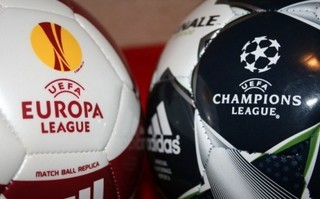

Domingo Amado, periodista, ha trabajado para Europa Press y diversos medios extranjeros. Además, ha sido colaborador de Perarnau Magazine y de Goal.com. Recientemente ha dado un paso más montando su propio blog personal con un aire ciertamente profesional. Pero, para nosotros, por mucho que siga creciendo profesionalmente, siempre será Garrincha, el de Café Fútbol. En [...]

Domingo Amado, periodista, ha trabajado para Europa Press y diversos medios extranjeros. Además, ha sido colaborador de Perarnau Magazine y de Goal.com. Recientemente ha dado un paso más montando su propio blog personal con un aire ciertamente profesional. Pero, para nosotros, por mucho que siga creciendo profesionalmente, siempre será Garrincha, el de Café Fútbol. En DDF le hemos abierto las puertas para tratar un tema sobre el que se han escrito muchas líneas pero se han llegado a pocas conclusiones válidas: la viabilidad de una Superliga europea.
Mantiene mucha gente que una Superliga Europea sería el paso natural hacia el siguiente estado de la competición, una especie de perfeccionamiento de la antigua Copa de Europa y actual Champions League en un torneo que enfrentaría a las instituciones más poderosas del Viejo Continente, quizás al estilo NBA. Primer error. Si el fútbol se cierra, el fútbol sufre. Si se plantea como la liga baloncestística norteamericana, ¿qué pasa con los clubes que ya no tienen opción de jugar eliminatorias si es que las hay? ¿Se quedan unos meses sin competir al no haber descensos? ¿Acaso clubes de la categoría de un Sevilla, una Fiorentina o un Tottenham no podrían ascender a la Superliga? ¿Cuántos partidos juegan? ¿Hay división en Europa Central, Norte, Sur, Oriental u Occidental? ¿Cuántos clubes por país regidos por qué criterios? Estos y otros muchísimos interrogantes aparecen en el horizonte que los grandes ven como el maná salvador de su futuro mientras los medianos-pequeños lo temen como un retroceso que les cortaría definitivamente las alas.
Tal y como está establecido el fútbol contemporáneo, que ha cambiado tantísimo en la última década, se hace muy complicado imaginar un escenario en el que en alguno de los 4 campeonatos europeos no ganen los 2 o 3 clubes de siempre, si bien la tónica no siempre se cumple en Alemania con el Bayern, en Italia el Napoli promete dar guerra, en Inglaterra los jeques edifican nuevas superpotencias donde antes habían equipos medios y en España afortunadamente el Atlético de Madrid aparece como alternativa, veremos si fiable, al duopolio de Real Madrid y FC Barcelona. Retrocediendo en el tiempo en todas estas ligas encontramos campeones que actualmente suenan a quimera (Betis, Casale, Eintracht Frankfurt, Southampton…), pero que con el sistema de toda la vida han podido competir de igual a igual con sus adversarios hasta la llegada que supuso el ‘boom televisivo’ y los sponsors a escala global. Incluso ya antes de esto último, que básicamente ha aumentado las diferencias presupuestarias a niveles desorbitados.
¿No se han planteado en los grandes clubes que lo especial de disputar la Champions cada año (muchísimo más antiguamente) era batirte eventualmente contra los mejores equipos del continente? Sin duda, al igual que llegamos al hartazgo en la primavera de 2011 durante la ‘tormenta de Clásicos’, quizás nos cansaría ver cada poco al Milan en el Bernabéu o al Manchester United en el Juventus Stadium. De hecho, estos últimos años hemos asistido a tantos duelos repetidos entre algunos de estos grandes en la Champions que se ha perdido parte de la magia de antaño. Cada vez son menos especiales unos envites que ya no enfrentan al campeón de una nación contra el de otra, sino al cuarto de España contra el tercero de Italia, quizás ya desmontados por clubes de mayor enjundia y poderío económico. Veanse el actual Montpellier, el Lille, el Málaga o el Napoli, que en verano perdieron a Giroud, Hazard, Cazorla y Lavezzi sin ir más lejos.
En el otro extremo de la baraja, si los poderosos de cada país abandonan sus ligas se podrían resentir las estructuras más débiles de esos torneos. Si miramos al hincha, ese al que jamás se pregunta pero del que se espera se amolde a horarios ridículos bajo precios desorbitados, el campeonato patrio perdería también su aliciente. ¿Se sentiría completamente realizado un seguidor del Betis si su equipo gana la Liga Española sin haber derrotado a los más poderosos? Me pongo en la piel de un aficionado del Barakaldo –o del Guadalajara, o del Melilla-, para el que ya no sería tan magnífico ese sueño de subir a Primera para recibir a Athletic y Real Sociedad en Lasesarre, o visitar el Bernabéu, el Calderón o el Camp Nou. Muchos de esos potenciales rivales quizá ya no estarían para competir contra ellos.
Sin ser absolutamente perfecto, prefiero el sistema vigente de competiciones europeas. Precisamente uno de los grandes éxitos recientes de la actual Champions League es su función integradora, reuniendo a clubes que no desentonan entre los titanes continentales como el APOEL o el BATE Borisov. Y si aún así lo hicieran, ¿tienen menos derecho a pelear por la gloria los campeones de una liga menor que el cuarto clasificado de otra más potente? Yendo incluso más allá de ellos, ¿tendrían posibilidades de disputar la Euroliga clubes de la tradición y el palmarés (también continental) de Estrella Roja, Steaua de Bucarest o el Anderlecht?
Otro de los cristales del prisma ofrece una visión diferente. Con todos los respetos, por poner un par de ejemplos a vuelapluma el Racing de Santander o el Granada –clubes a los que aprecio y respeto-, no llenan en condiciones normales los grandes estadios españoles, aunque más allá de las taquillas lo interesante para los clubes (y la UEFA, que cuando huelen a dinero siempre andan por medio) son los contratos televisivos los que surgirían como la nueva panacea. En función de cómo se planteasen éstos, los dos gigantes españoles ya no tendrían la abusiva ventaja que gozan en este sentido respecto a los Inter, Manchester United o Bayern, aunque supongo que si la mantendrían (aunque a menor distancia) sobre Porto, Celtic o PSG. No digamos ya respecto al resto de clubes connacionales, que conocen sobradamente cada jornada lo que implica jugar ante un equipo que cobra en un curso de los operadores lo que el tuyo en diez.
Desde el otro lado, las televisiones nacionales pagarían menos por su producto local, abriéndose una gran brecha respecto a los clubes de ese mismo país que si disputarían la Superliga. El Deportivo, el Celta, el Mallorca o el Sevilla han tenido formaciones memorables que en los últimos 15 años han sido capaces de lograr grandes gestas, con títulos en algunos casos, finales en otros e incluso goleadas impensables como las protagonizadas por los clubes gallegos sobre la Juventus, el Milan o el Benfica, titanes europeos que gracias a la magia del fútbol hincaron la rodilla ante competidores que pocos años antes de aquello se batían el cobre en Segunda mientras ellos llegaban a las instancias definitivas de la Champions.
¿No radica precisamente ahí la magia del fútbol? ¿No es sencillamente maravilloso que un mecánico, un camionero, un albañil y un profesor se junten bajo unos mismos colores e ilusiones para batir a unos profesionales que ganan en pocos días lo mismo que ellos en un año completo? Acabar con las competiciones nacionales acabaría por matar al fútbol, cuya base son esos miles de jugadores y clubes humildes y anónimos cuya amplia base es fundamental para sustentar un deporte-negocio que sin ellos no sería lo mismo. ¿Quién sino llenaría los estadios, vería los partidos y compraría el merchandising de los grandes clubes?
Quizás el modelo de Superliga Europea –y reforma de nuestras Primera y Segunda- que propone Sandro Rosell, presidente del Barcelona, acabe calando entre las instituciones balompédicas nacionales y europeas, pues parece que el futuro va encaminado inexorablemente hacia un fútbol más supranacional y superprofesionalizado donde el aficionado pintará cada vez menos en pos de unas televisiones, conglomerados empresariales y federaciones que ordenarán el cómo, el dónde y el cuándo, para lamento de aquellos románticos de nuestro deporte de toda la vida. Y no, no es una negación al avance ni a la modernidad, sino a lo que nos ha hecho llegar hasta aquí desde nuestras raíces en la infancia, lo que nos ha enamorado de un juego que practicamos sea cual sea nuestra edad en la calle, en el salón de casa con nuestro hijo o sobrino, o en la playa, que nos apasiona visceralmente en sus momentos más ardientes y nos afecta emocionalmente en una derrota del equipo de nuestros amores, llámese Real Jaén o Ajax de Ámsterdam. Si al final tendrán razón aquellos que detestan el fútbol moderno…